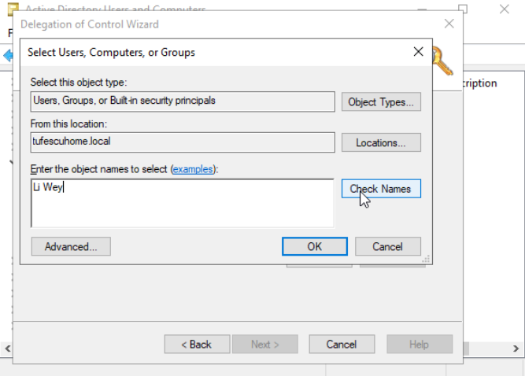

Windows Domains
In a small network, with a few computers and users, configuring and troubleshooting each machine isn't a problem. However, in most cases, typical networks contain a large number of computers, servers, printers, users etc. Managing each as a separate entity can become very confusing and repetitive. To overcome these challenges, Windows Domains can be used.
Simply, a Windows Domain is a group of users and computers under the administration of a given entity. Its main idea is to centralize the administration of common components of a Windows computer network in a single repository called Active Directory(AD). The server that runs the Active Directory is called Domain Controller(DC).
Advantages of having a configured Windows Domain:
- Centralised identity management: all users across the network are set up with minimum effort.
- Managing security policies: security policies are configured from the Active Directory and applied to users and computers across the network.
Active Directories are very common. For example, at the local library, you most likely cannot access the Control Panel on the computers. This is because a security policy prevents you from doing that. Also, it stores credentials, so you can use them on any machine.
Active Directory
The core of any Windows Domain is the Active Directory Domain Service(AD DS). This is like a catalogue that holds the information of all the "objects" on the network. Amongst the objects supported by AD, there are users, groups, machines, printers, shares and many others. Objects in AD:
-
Users are one of the most common object types in AD. Users are objects known as security principals, which means that they can be authenticated by the domain and be assigned control over resources like files or printers. Security principal = object that can act upon resources on the network. Users can be:
- People: real people that need to access the network, like employees.
- Services: services like Kerberos or MSSQL. Every service needs a user to run, but service users only have privileges to run their specific services.
-
Machines: for every computer that joins the AD, a machine object is created. They are also security principals and are assigned accounts, which are local administrators on the assigned computer and are not supposed to be used on any other computer. Machine account passwords are randomly rotated and are generally comprised of 120 random bits. The machine account name is the computer's name followed by a $.
-
Security groups: used to assign access rights to files or other resources to entire groups instead of individual users. security groups are also considered security principals. Groups can have both users and machines as members and can also include other groups.
Several groups are created by default in a domain:
- Domain Admins
- Administrative privileges over the entire domain, including DCs.
- Server Operators
- Can administer Domain Controllers. Cannot change any administrative group memberships.
- Backup Operators
- Can access any file. Used to perform backups of data on computers.
- Account Operators
- Can create or modify other accounts in domain.
- Domain Computers
- All existing computers in the domain.
- Domain Controllers
- All existing DCs on the domain.

Running "Active Directory Users and Computers" on the Domain Controller allows for the configuration of users, groups and machines:
This will open a hierarchy of users, computers and groups that exist on the domain. They are organised in Organizational Units(OUs). These are container objects with the purpose of classifying users and machines. They are mainly used to group users/computers with similar policies. A user can be part of a single OU at a time.
Here, you can add OUs, organise them, add users, set them up, move them around. You can also access individual user properties, where you can edit names, change passwords, set remote control up etc. Delegations can be set up here too.

In the photo, we can see that there is an OU called OFFICE with some child OUs for Administrators, IT Department, Personnel, Teachers and Workstations. A layout like this is expected, but it is not always used.
Typically, this structure mimics the actual business' structure, because it allows for easier policy deployment.
Upon opening any OU, you can see its contents and perform tasks like creating, modifying and deleting users. You can also reset passwords, force password reset at logon, send mail, disable accounts and more.

There are some default containers apart from the OFFICE. They are automatically configured by Windows.
- Builtin: Contains default groups available to any Windows host.
- Computers: Any machine that joins the domain gets put here by default and can be moved as needed.
- Domain Controllers: Contains the DCs by default.
- Users: Default users and groups.
- Managed Service Accounts: Accounts used by services in the domain.
Managing users and computers
- Deleting extra OUs and users
-
By default, OUs are protected against accidental deletion. To disable that, enable Advanced Features in the View menu.

This will show additional containers and will allow to disable the accidental deletion protection. Right-click the OU, go to Properties and disable it in the Object tab.
After unchecking the box, you can right-click on the OU and finally delete it.
To delete an user, you can just right-click it and press Delete.
- Delegation
-
In AD you can give specific users control over some OUs. The process is known as delegation and grants specific users privileges to perform advanced tasks without a Domain Administrator stepping in. Let's say we want to give someone in the IT Department the ability to reset the Teachers' passwords. Right-click the OU, press Delegate Control.
When the Wizard pops up, press Next, then Add
Enter the name and press Check Names to make sure it's correct. Then press Next. In this next tab, you can select tasks to delegate.
Press Next, then Finish and now Li Wey can change the password of anyone in Teachers.
If now
Li Weytries to changeOlivia Smith'spassword through the same Active Directory Users and Computers, he won't be able, because he does not have enough privileges to open it. Instead, he has to use powershell:PS C:\Users\liwey> Set-ADAccountPassword oliviasmith -Reset -NewPassword (Read-Host -AsSecureString -Prompt 'New Password')We can force a password reset at next logon:
PS C:\Users\liwey> Set-ADUser -ChangePasswordAtLogon $true -Identity oliviasmithNote: to use Active Directory related cmdlets and software, Remote Server Administration Tools need to be installed on the computer. The administrator account has to run:
PS C:\Users\Administrator> Install-WindowsFeature RSAT-AD-TOOLS -IncludeAllSubFeature - Managing Computers
-
By default, all computers that join a domain, except the DC, are put in a container called Computers.
It is a good idea to separate all the computers in different containers, as needed, such as Workstations, Servers and Domain Controllers.
Managing Group Policies
We have organised users and computers in OUs, but not with any real functionality. The idea is to be able to deploy different policies for each OU individually. This way, we can push different security configurations to users depending on their department.
We can manage these properties through Group Policy Objects(GPO). They are a collection of settings that can be applied to OUs. They contain policies aimed at either users or computers.
To configure them, the Group Policy Management tool is used.
The interface might look a bit overwhelming, but is really used to get a grasp on.
The first thing you can see is the GPOs hierarchy. To configure a Group Policy, first create a GPO under Group Policy Objects and then link it to the OU where you want policies to apply.
We can see that there are already 3 GPOs created. The Domain Default Policy is linked to the whole domain, so it has effect over everything. The IT Dept Policy is linked to the Teachers OU. It is the delegation we created earlier. The Default Domain Controllers Policy is the default policy applied to Domain Controllers in the domain. Because the Default Domain Policy is at the root, it applies to all OUs, which means even the Admins OU will be affected. Any GPO will apply to any linked OU and also all the sub-OUs.
Let's examine a GPO in detail: the Default Domain Policy.
We can see in the scope tab that it is only linked to thm.local. This means it applies to the whole domain. Here, we can apply security filtering, so that the GPO is only applied to specific users/computers under the OU. Authenticated Users group includes all users and computers.
The settings tab includes the actual contents of the GPO and tells us the specific configurations it applies. Each GPO has a configuration that applies only to users and one that applies to machines only. The Default Domain Policy GPO only contains Computer Configurations. It contains very basic configurations that should apply to most domains, like password and account lockout policies.
Let's say we want to edit the minimum passwords length for all computers across the whole domain. We will right-click the Default Domain Policy and select Edit.
Navigate to the corresponding policy in Computer Configurations -> Policies -> Windows Settings -> Security Settings -> Account Policies -> Password Policy
After double-clicking the option, it is very easy to change it. Also, the Explain tab offers an explanation of the policy.
GPOs are distributed to the network via a share called SYSVOL. It is stored in the DC. Each user should have access to this share
to sync their GPOs periodically. The SYSVOL share points by default to C:\Windows\SYSVOL\sysvol directory on each DC.
After making changes to GPOs, it might take up to 2 hours for them to update on all computers. You can run the following command on any computer to sync its GPOs immediately:
PS C:\> gpupdate /force
Authentication Methods
When using a Windows domain, all authentication credentials are stored on the Domain Controller. Whenever a user tries to communicate with a service using domain credentials, the service needs to ask the Domain Controller to verify if they are correct. Two protocols can be use:
Kerberos
Used by any recent version of Windows. Default protocol in any recent domain-
Kerberos is a network authentication protocol designed to provide secure authentication between clients and services over an insecure network. It was originally developed at the Massachusetts Institute of Technology (MIT) and is widely used in enterprise environments, especially in Windows Active Directory domains.
The main goal of Kerberos is to prevent attackers from intercepting or tampering with authentication data. Instead of sending passwords across the network, Kerberos uses tickets and symmetric-key cryptography to prove a user's identity.
Key features:
Mutual Authentication: Both the client and the server need to verify each other's identity.
Single Sign-On(SSO): A user logs in once and can access multiple services without re-entering their credentials.
Ticket-Based System: Authentication is handled using temporary encrypted tickets rather than transmitting passwords.
Time-Sensitivity: Kerberos relies on synchronized clocks; tickets have expiration times to reduce the risk of replay attacks.
How it works(simplified):
- Authentication Service (AS) Request :
A user logs in and requests access from a Authentication Server(AS).
If valid, the AS provides a Ticket Granting Ticket(TGT) encrypted with the user's password.
- Ticket Granting Service(TGS) Request :
The client presents the TGT to the Ticket Granting Server (TGS) when accessing a resource.
The TGS issues a Service Ticket for the requested service.
- Service Request :
The client presents the Service Ticket to the target server.
The server validates it and allows access without needing the user's password again.
Advantages
- Eliminates sending plaintext passwords over the network.
- Provides strong authentication and reduces risk of impersonation.
- Efficient for large-scale environments thanks to Single Sign-On.
Limitations
- Requires synchronized time between clients and servers.
- If the Key Distribution Center (KDC) (which includes AS and TGS) is compromised, the entire system's security is at risk.
- Complex setup and management compared to simpler authentication methods.
NetNTLM
Legacy authentication protocol kept for compatibility purposes. It should be considered obsolete, but most networks still have it enabled-
NetNTLM is a challenge-response authentication protocol used primarily in Microsoft Windows networks to authenticate users over network connections. It is a successor to the older LAN Manager (LM) and NTLMv1 protocols, designed to improve security while maintaining compatibility with legacy systems.
NetNTLM is commonly used in SMB (Server Message Block), HTTP, and other network authentication scenarios where NetNTLM is not available or cannot be used.
Key Features:
Challenge-Response Mechanism: The server sends a challenge (a random value), and the client responds with a hash derived from the user's password and the challenge. This means the password itself is never transmitted over the network.
Backward Compatibility: Works with older Windows systems that do not support Kerberos.
Hash-Based Authentication: Uses MD4/MD5 and HMAC functions to generate authentication responses.
How it works(simplified):
- Negotiation Phase :
The client and server agree to use NetNTLM for authentication.
- Challenge Phase :
The server sends a random challenge to the client
- Response Phase :
The client calculates a response using the hash of the user's password and the server's challenge.
The client sends this response back to the server.
- Validation Phase :
The server compares the response with its own calculation (using the stored password hash).
If the values match, the user is authenticated.
Advantages
- Does not transmit passwords in plaintext, reducing the risk of interception.
- Simple to implement and compatible with legacy systems.
Limitations
- Vulnerable to pass-the-hash attacks: If an attacker obtains the NTLM hash, they can authenticate without knowing the actual password.
- Weaker security than Kerberos: MD4-based hashing and lack of mutual authentication make it less secure.
- No built-in ticketing or Single Sign-On like Kerberos.
Trees, Forests and Trusts
We have covered how to manage a single domain, the role of a DC and how it manages computers, servers and users.

As companies grow, so do their networks. Sometimes, you might need to add new domains.
Trees
You might need, for example, another domain in another country, with different laws and regulations, so different GPOs. Active Directory supports integrating multiple domains, so you can partition your network into units that can be managed independently. If you have two domains with the same namespace, for example office.local, you can join them in a Tree.
A new security group needs to be introduced with trees and forests. The Enterprise Admins group will grant a user administrative privileges over an enterprise's domains.
Forests
The domains can also be configured in different namespaces. The union of several trees with different namespaces is known as a forest. For example, when a company acquires another one.
Trust Relationships
At some point, a user on a domain might need to access a file on another domain. For this to happen, domains in trees and forests are joined together by trust relationships.

In the picture example, domain 1 trusts domain 2, which means that a user on domain 2 can be authorised to access resources on domain 1. The direction of a one-way trust is contrary to that of the access direction.
Two-way trust relationships can be made to allow both domains to mutually authorise users from the other. By default, joining domains under a tree or forest forms a two-way trust relationship.
Having a trust relationship doesn't automatically allow access over the files, the access still needs to be authorised to be performed.